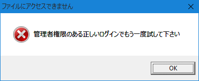

Windows Vista～Windows 8.1では、2003年～2008年ぐらいの間に発売されたいくつかのソフトやゲームのうち、
SafeDisk等が利用されていたタイトルが、 デフォルトの設定では動作しなく なりました。
(※ 2015/9/9の「KB3086255」のWindows Updateに拠る)
このため、国内で言えば、KOEIを中心にいくつかのタイトルがプレイ不可能になっています。
その際のエラーメッセージとしては、
「 管理者権限のあるログインでもう一度試して下さい 」といったものが中心となります。

(このようなダイアログが出ず、一瞬マウスアイコンがクルっとするだけで、すぐに終了してしまうものもあります)
この問題は、コンソールコマンドにて対処が可能です。
(後述しているツールでも解決が可能です。)
コンソールプロンプトを管理者権限で起動して…
sc config secdrv start=demand
sc start secdrv
これでSafeDiskを利用したゲームが、プレイ「可能」な状態となります。
コンソールプロンプトを管理者権限で起動して…
sc stop secdrv
sc config secdrv start=disabled
これでSafeDiskを利用したゲームが、プレイ「不可能」な状態となります。
コンソールでの実行や、複数のバッチファイルの作成などは、以外と面倒くさいですので、
SecDrvChangeShell
の利用をお勧めします。